Property Details Expander
In the Models & Functions tab, when you select a property in the Properties expander, the Details expander lets you configure various aspects of how that property behaves and is displayed in Desigo CC.
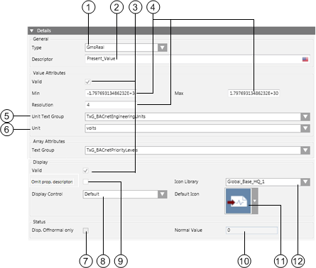
| Name | Description |
General | ||
1 | Type | Defines the Data Point Type in Desigo CC. |
2 | Descriptor | Describes the property in clear text |
Value Attributes | ||
3 | Displays, based on the color code, the source used for inheriting the information. | |
4 | Min, max, resolution | Minimum and maximum value of the property, and resolution. |
5 | Unit Text Group | List of available text groups. |
6 | Unit | Selection list for a unit from the selected Text Group. |
Array Attributes | ||
| Text Group | Sets the text group (such as, TxG_BACnet_Event_Transition_Bits_BACNET) that associates an array number to a corresponding text. For example: |
Display | ||
8 | Display Control | Defines display in display control |
9 | Omit prop.descriptor | When selected, the Present Value label is displayed alongside the property's value. |
11 | Default Icon | Defines the icon for this property. This icon is displayed if no icon is assigned to the enumeration in the text catalog. |
12 | Icon Library | List of available icon libraries |
Status | ||
7 | Disp. off-normal only | When this check box is selected, the normal state is not displayed. Only off-normal states are displayed in Operation and Extended Operation. |
10 | Normal value | Defines the normal state for the property. The entry field for defining normal state depends on the data point type (Enumeration, Real, Boolean and Bitstring) as well as the selected text catalog. For details see Normal Value Entry Fields. |
Display Group Box
- Omit prop.descriptor
When cleared, the text Out_of_Service is also displayed for the current value in the Operation / Extended Operation tab.
Cleared | |
Selected |
- Display Control
- Default: Standard control is displayed in the Operation / Extended Operation tab.

- Priority Array:Priority Array control is displayed in the Operation / Extended Operation tab. This control may only be used for the BACnet property Priority_Array.

- Event Time Stamp: Event Time Stamp control is displayed in the Operation / Extended Operation tab. This control may only be used for BACnet Event_Time_Stamps.

- Default Icon
The default icon is always displayed in the Operation / Extended Operation tabif no icons are defined in the text catalog.
No Symbols Defined in the Text Group | |
View in Text Group | 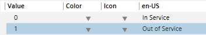 |
View in Operation tab | 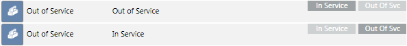 |
Symbols Defined in the Text Group | |
View in Text Group | 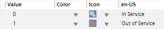 |
View in Operation tab | 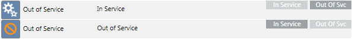 |
Value Attributes for Different Data Point Types
The selected data point type determines the entry field available for this type.
- Boolean
- Real
- DateTime
- BitString
- Enumeration
- UInt
- ApplSpecific / Array
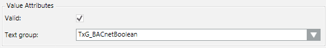
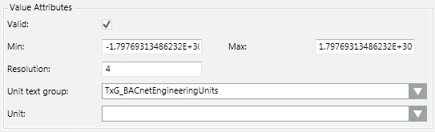
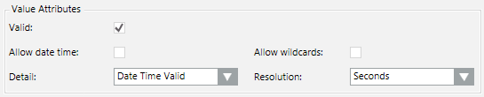
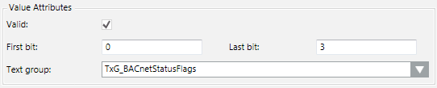
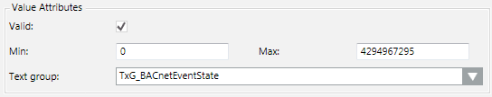
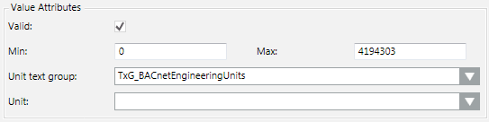
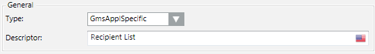
Normal Value Entry Fields
Normal state is not displayed in the individual viewer (Operation, Extended Operation) if the Disp. Offnormal only check box is selected. You can enter the value in the Normal Value entry field representing the normal state. All other abnormal states are displayed in the corresponding viewer if the value is not equal to the set normal value.

The entry field for defining normal state is based on the corresponding data type property (Enumeration, Real, Boolean and Bitstring) as well as the selected text catalog.
- Real/Boolean
Enter a value for Normal value.
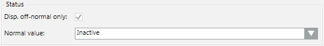
- Enumeration
Select the appropriate value from the Normal value drop-down list box.
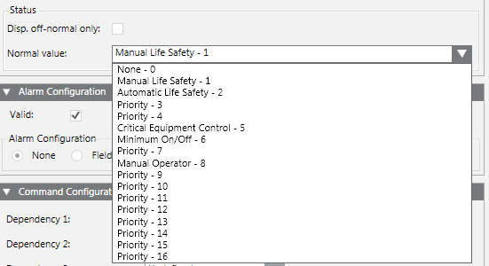
- BitString
Select the check box representing the Normal value.
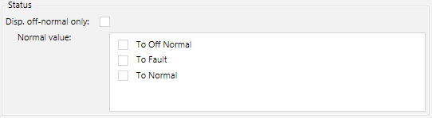